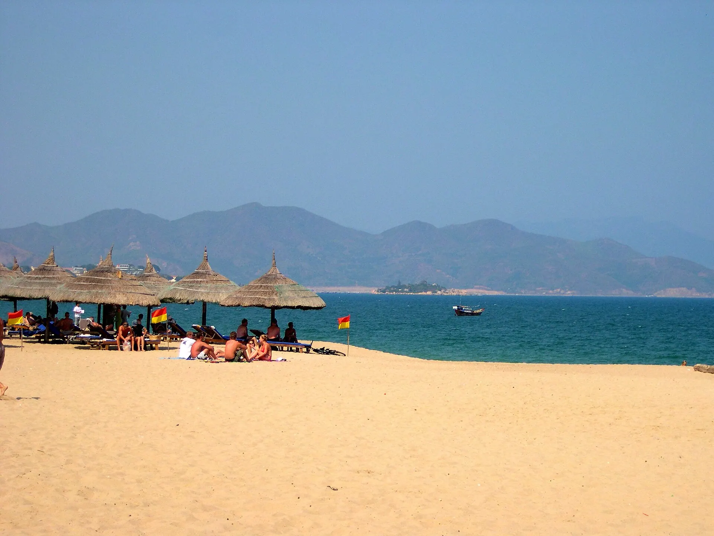

Bún chả cá
Chả cá thu, cá chuồn chiên và hấp trong nước dùng ngọt thanh.

Vịnh Nha Trang là thành viên câu lạc bộ những vịnh biển đẹp nhất thế giới với bờ cát dài, nước trong xanh và hệ sinh thái san hô phong phú. Du khách có thể lặn biển ngắm san hô, tắm bùn khoáng hay khám phá tháp Chăm Po Nagar cổ kính.
Đang tải thời tiết...
Bấm vào một tháng để xem có nên đi không
Học sinh nghỉ hè, các bãi biển đông nhất năm.
Đi giữa tuần và đặt phòng sớm để có giá tốt.
Mưa lớn, có thể ngập lụt và bão; phố cổ Hội An, Huế có thể ngập.
Theo dõi dự báo, chọn vé/phòng hủy linh hoạt; tàu ra đảo có thể tạm dừng.
Lễ theo âm lịch đổi ngày dương mỗi năm – kiểm tra lịch chính thức trước khi đi.
Chả cá thu, cá chuồn chiên và hấp trong nước dùng ngọt thanh.
Nem nướng than cuốn bánh tráng, rau sống, chấm tương đặc biệt.
Ảnh minh họa: Thịt nướng than hoaBánh đổ khuôn đất nung, nhân trứng, mực, tôm, chấm nước mắm.
Bún chả cá, bún sứa Nha Trang
123 Ngô Gia Tự, Nha Trang Báo saiNem nướng Ninh Hòa cuốn bánh tráng
16A Lãn Ông, Nha Trang Báo saiBánh căn trứng, mực, chấm mắm nêm
51 Tô Hiến Thành, Nha Trang Báo saiHải sản khô, ăn vặt, mua quà
Chợ Đầm, Nha Trang Báo saiBánh canh chả cá thu
Ngô Thời Nhiệm, Nha Trang Báo saiBún sứa, bún cá dầm
Chợ Xóm Mới, Nha Trang Báo saiTôm hùm, ốc, cá nướng
Vĩnh Lương, Nha Trang Báo saiNướng, ăn vặt ven biển
Trần Phú, Nha Trang Báo saiGiá tham khảo mỗi người. Bấm địa chỉ để mở Google Maps xem giờ mở cửa và đánh giá mới nhất.
Khu bảo tồn biển Hòn Mun với làn nước trong vắt.
Hòn Mun, Hòn Tằm, Hòn Một, Bãi Tranh trong một ngày.
Thư giãn tại Tháp Bà hoặc I-Resort.
Công viên giải trí trên đảo Hòn Tre.
Tự gợi ý theo điểm đến và tháng đi (chọn ngày khởi hành ở phần Lịch trình để đổi tháng). Đánh dấu để ghi nhớ món đã chuẩn bị.
Thấy giá vé, giờ mở cửa hay quán đã thay đổi? Báo sai
500k–2tr / đêm
Ngay bãi biển trung tâm, phố đi bộ.
2tr–7tr / đêm
Resort biển gần sân bay.
2,5tr–6tr / đêm
Hợp gia đình đi công viên giải trí.
Sân bay Cam Ranh (CXR) cách trung tâm ~35 km: xe bus/taxi ~40 phút. Ga Nha Trang nằm ngay trung tâm.
Giá phòng tham khảo cho 2 người/đêm, cao hơn vào lễ Tết và cuối tuần. Việt Travel không nhận hoa hồng từ các trang đặt chỗ.
Việt Travel · Khánh Hòa · Thời điểm đẹp: Tháng 1 – 8
Tháp Bà Po Nagar, chùa Long Sơn.
Tắm bùn khoáng nóng, thư giãn.
Dạo biển Trần Phú, ăn hải sản chợ Xóm Mới.
Dạo phố đêm một chút rồi về nơi ở nghỉ ngơi
Lặn ngắm san hô Hòn Mun.
Hòn Tằm, Bãi Tranh, tiệc nổi trên biển.
Dạo phố đêm một chút rồi về nơi ở nghỉ ngơi
Mang theo bánh mì, xôi nếu khởi hành sớm
Đi cáp treo vượt biển sang Hòn Tre.
Công viên nước và trò chơi tại VinWonders.
Xem show nhạc nước Tata.
Kết thúc tour: trả phòng, mua đặc sản và di chuyển về.
Chi tiết mức tiết kiệm
Chi tiết mức thoải mái
Tháp Bà Po Nagar, chùa Long Sơn.
Tắm bùn khoáng nóng, thư giãn.
Dạo biển Trần Phú, ăn hải sản chợ Xóm Mới.
Dạo phố đêm một chút rồi về nơi ở nghỉ ngơi
Lặn ngắm san hô Hòn Mun.
Hòn Tằm, Bãi Tranh, tiệc nổi trên biển.
Dạo phố đêm một chút rồi về nơi ở nghỉ ngơi
Mang theo bánh mì, xôi nếu khởi hành sớm
Đi cáp treo vượt biển sang Hòn Tre.
Công viên nước và trò chơi tại VinWonders.
Xem show nhạc nước Tata.
Dạo phố đêm một chút rồi về nơi ở nghỉ ngơi
Ăn sáng tại nơi ở (thường đã gồm trong giá phòng)
Ra đảo Bình Ba – "đảo tôm hùm", tắm bãi Nồm.
Dạo chợ đêm hoặc phố ẩm thực để chọn món ăn tối
Về Nha Trang, dạo chợ đêm.
Kết thúc tour: trả phòng, mua đặc sản và di chuyển về.
Chi tiết mức tiết kiệm
Chi tiết mức thoải mái
Tháp Bà Po Nagar, chùa Long Sơn.
Tắm bùn khoáng nóng, thư giãn.
Dạo biển Trần Phú, ăn hải sản chợ Xóm Mới.
Dạo phố đêm một chút rồi về nơi ở nghỉ ngơi
Lặn ngắm san hô Hòn Mun.
Hòn Tằm, Bãi Tranh, tiệc nổi trên biển.
Dạo phố đêm một chút rồi về nơi ở nghỉ ngơi
Mang theo bánh mì, xôi nếu khởi hành sớm
Đi cáp treo vượt biển sang Hòn Tre.
Công viên nước và trò chơi tại VinWonders.
Xem show nhạc nước Tata.
Dạo phố đêm một chút rồi về nơi ở nghỉ ngơi
Ăn sáng tại nơi ở (thường đã gồm trong giá phòng)
Ra đảo Bình Ba – "đảo tôm hùm", tắm bãi Nồm.
Dạo chợ đêm hoặc phố ẩm thực để chọn món ăn tối
Về Nha Trang, dạo chợ đêm.
Dạo phố đêm một chút rồi về nơi ở nghỉ ngơi
Ăn sáng quán bình dân đông người địa phương gần nơi ở
Tắm biển Dốc Lết cát trắng mịn.
Cơm trưa bình dân gần điểm tham quan
Suối khoáng nóng Trăm Trứng, mua yến sào làm quà.
Ăn tối gần nơi ở – chọn quán đông khách địa phương
Bar trên tầng thượng ngắm vịnh Nha Trang.
Kết thúc tour: trả phòng, mua đặc sản và di chuyển về.
Chi tiết mức tiết kiệm
Chi tiết mức thoải mái
Chưa gồm vé máy bay/tàu xe tới Nha Trang. Giá tham khảo, thay đổi theo mùa.
Muốn đi nhiều nơi trong một chuyến? Ghép Nha Trang với các điểm đến khác.